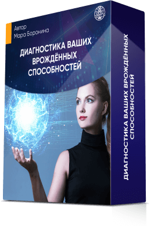

День 1-й
21 сентября в 15:00 мск
Диагностика ваших врождённых способностей

- Узнаете, что такое ясновидение, яснознание, яснослышание, ясночувствование и поймёте, в чем разница?
- Определите, есть ли у вас врожденный дар?
- Пройдете практику на выявление Личного Канала Сверхспособностей
- Пройдете практику на раскрытие Аджна-чакры (усиления восприятия информации)
- Совершите практику альфа-погружение на выявление вредительских воздействий со стороны
- Узнаете, где находится Центр Управления Судьбой
РЕЗУЛЬТАТ:
- Знаете, что сверхспособности — это не удел избранных, вы тоже обладаете ими с рождения, главное — выявить и раскрыть свой потенциал
- Определили, какие каналы восприятия существуют и как их использовать для усиления своих возможностей для себя и близких, на работе и в быту
- Выявили сторонние негативные воздействия, которые не дают развиваться вашим способностям